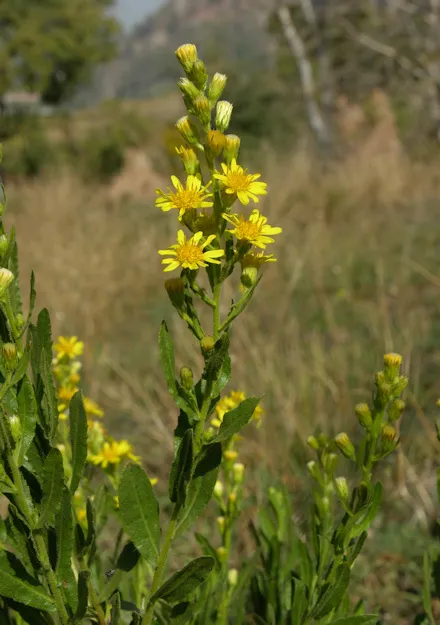

Ayuntamiento de Senés
JARDIN BOTANICO DE ESPECIES AUTOCTONAS DE SENES

Daphne gnidium

La mata mosquera (Daphne gnidium) es un arbusto perenne característico del matorral mediterráneo, conocido por su aspecto compacto y su fuerte olor. Se trata de una planta adaptada a condiciones secas y soleadas, muy presente en zonas de monte bajo.
Puede alcanzar entre 0,5 y 1,5 metros de altura, con tallos leñosos y hojas estrechas, alargadas y de color verde. Sus flores son pequeñas, de color blanquecino, y se agrupan en inflorescencias terminales, seguidas por frutos rojizos muy llamativos.
La mata mosquera es propia de la región mediterránea, donde crece en matorrales, laderas y zonas de monte bajo. Se adapta bien a suelos secos, pedregosos y pobres en nutrientes.
En la Sierra de los Filabres, forma parte del matorral típico, contribuyendo a la diversidad del ecosistema y ocupando zonas expuestas al sol.
La mata mosquera contiene compuestos activos que han sido estudiados por sus posibles propiedades medicinales. Sin embargo, es una planta tóxica, por lo que su uso debe realizarse con precaución.
Tradicionalmente, se ha utilizado más por sus propiedades repelentes que por aplicaciones medicinales directas.
La mata mosquera simboliza la protección y la defensa natural, debido a sus propiedades repelentes y a su carácter tóxico.
También representa la adaptación a ambientes secos y la capacidad de sobrevivir en condiciones adversas.
En Senés, la mata mosquera se utilizaba para eliminar a las moscas, tambien al quemarla el humo que desprende ahuyenta a los mosquitos..
Se decía que tiene ciertas propiedades beneficiosas, para el reuma, artritis, vás urinarias, astringente paludismo.
La mata mosquera florece principalmente en verano, produciendo pequeñas flores blancas que posteriormente dan lugar a frutos de color rojizo.
El nombre “mata mosquera” hace referencia a su uso tradicional como repelente de insectos, gracias a su fuerte olor.
Sus frutos, aunque atractivos visualmente, son tóxicos, lo que la convierte en una planta que combina belleza y peligro.